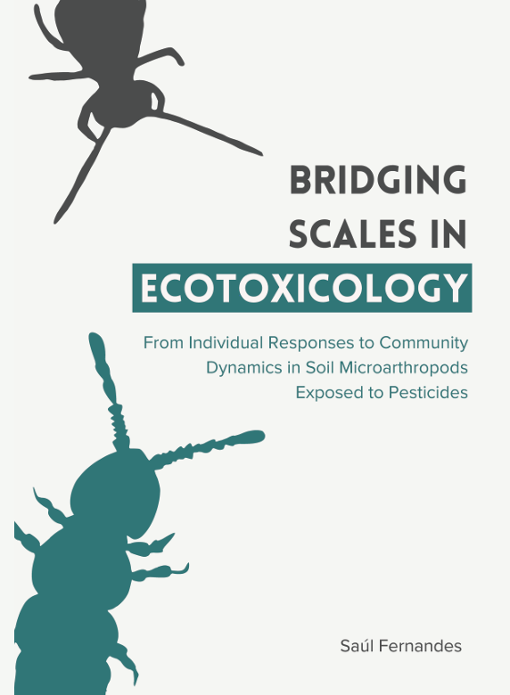

About me
I am an ecotoxicologist with international experience in assessing the environmental impact of chemical substances, particularly pesticides, on terrestrial ecosystems. My work has taken me across multiple countries, allowing me to engage in diverse research projects, collaborate with multidisciplinary teams, and develop a broad perspective on environmental risk assessment of chemicals.
I recently completed my PhD at Vrije Universiteit Amsterdam, where I investigated the effects of pesticides on soil microarthropods, using approaches that ranged from standard toxicity testing to metabolomics and field experiments. Before that, I worked as a research assistant at GreenUPorto in Portugal, focusing on conventional and nano-formulated pesticides and deriving soil screening values for metals using natural soils. I have also conducted temporary assignments at Aarhus University in Denmark and ECT Oekotoxikologie in Germany, gaining hands-on experience with field and laboratory ecotoxicology under Good Laboratory Practice (GLP) conditions and Taxonomy of Collembola extracted from natural soils.
My expertise spans both terrestrial and aquatic ecotoxicology, with experience in low-tier tests with terrestrial ecotoxicological tests (e.g., Collembola, earthworms, and enchytraeids) and aquatic toxicity assessments (e.g., aquatic plants and water fleas). I have designed microcosm studies with several species of Collembola and I have also designed field experiments to test the potential effects of sequential mixtures of pesticides.
Beyond research, I thrive on collaboration—whether it’s teaming up with experts from different fields, mentoring students, or contributing to outreach projects like Living Soil, where I advised on soil biodiversity. I enjoy taking complex scientific insights and applying them to practical challenges, whether in environmental risk assessment, sustainable land management, or broader ecosystem protection.
If you'd like to connect, feel free to reach out!
Areas of expertise
Environmental toxicology
Expertise in environmental toxicology with a strong focus on plant protection products. My approach integrates multiple methods to provide a comprehensive understanding of environmental risks and contribute to safer practices.
Low Tier Hazard Assessment
Designing and executing standardized tests to evaluate the impact of environmental stressors on soil health. By utilizing key indicator species—such as springtails, earthworms, and enchytraeids—these assessments provide crucial baseline data.
Intermediate Tier Testing
I have designed microcosm studies that simulate real-world ecosystems in a controlled laboratory setting. This approach bridges the gap between standardized toxicity assays and full-scale field studies.
Field Studies
I have planned field studies that bridge the gap between controlled laboratory experiments and real-world conditions. These studies provide valuable insights into how environmental stressors—such as pesticides—affect soil health, biodiversity, and ecosystem functions.
Bridging Scales
Connecting biological responses from the molecular level to whole ecosystems. This multiscale approach provides a comprehensive understanding of environmental risks from early biochemical changes to broader impacts on survival, reproduction, and community dynamics.
Multidisciplinary Collaboration
Effective communication and collaboration across disciplines and borders have been central to my work in ecotoxicology. I have worked within international teams, bridging gaps between diverse fields.
Data Evaluation and Assessment
I focus in assessing and interpreting ecotoxicology data to extract key insights. With experience using tools like R, GraphPad, and SPSS, I ensure robust analysis that informs environmental risk assessments.
Publications
Authors: Saúl Fernandes, Laura Menezes, Matty P. Berg, Cornelis A.M. van Gestel.
This study evaluates the effects of the insecticide teflubenzuron on the survival and reproduction of different Collembola species in a mixed community. The research demonstrates species-specific responses, linked to traits of the animals. The findings highlight the importance of using multi-species approaches for pesticide risk assessment to better reflect ecological interactions and sensitivities.
Authors: Saúl Fernandes, Liyan Xie, Camilla Drocco, Cornelis A.M. van Gestel, Matty Berg, Martin Holmstrup, Stine Slotsbo, Bernhard Förster, Anja Coors.
This study examines the impact of three pesticides—clopyralid (herbicide), cypermethrin (insecticide), and pyraclostrobin (fungicide)—applied individually and sequentially on soil microarthropods. The research assesses short- and long-term effects on Collembola and Acari in field conditions, contributing valuable insights for environmental risk assessments of pesticide mixtures.
Authors: Saúl Fernandes, Diana Ilyaskina, Matty P Berg, Marja H Lamoree, Pim E G Leonards, Cornelis A M van Gestel.
This study explores how different Collembola species respond to the pesticide teflubenzuron, focusing on chitin metabolism and sensitivity. It highlights the need for species-specific risk assessments in environmental regulations.
Read Paper
Authors: Diana Ilyaskina, Saúl Fernandes, Matty P. Berg, Marja H. Lamoree, Cornelis A. M. van Gestel, and Pim E. G. Leonards.
This study explores the effects of the insecticide teflubenzuron on Folsomia candida, linking lipid profile changes with reproduction and stress. Findings suggest lipid analysis can serve as an early-warning tool for pesticide-induced reproductive disturbances.
Read Paper
Authors: Saúl Fernandes, Kees Buskermolen, Diana Ilyaskina, Ruben Bakker, Cornelis A. M. van Gestel.
This study investigates the sensitivity of Folsomia candida to four pesticides (cyproconazole, teflubenzuron, imidacloprid, and thiacloprid) at different life stages. Results indicate that younger springtails are more sensitive to insecticides, highlighting the importance of life stage in pesticide risk assessment.
Read Paper
Authors: S. Fernandes, V. Nogueira, F. Antunes, I. Lopes, R. Pereira.
This study evaluates the ecotoxicity of mixed micelles of linear alkylbenzene sulfonic acid (LAS) and ether sulfate-based surfactants (SLEnS) on soil organisms. Findings show that micelles with fewer ethylene oxide (EO) units are more toxic to Folsomia candida, and formulations with higher EO units are less hazardous, suggesting more sustainable surfactant designs.
Read Paper
Authors: Tatiana Andreani, Cláudio Matusse, Marta Gomes, Saul Fernandes, Anabela Cachada, Ruth Pereira.
This study compares the toxicity of conventional and nanoencapsulated formulations of lambda-cyhalothrin on soil invertebrates and terrestrial plants. The findings highlight the increased toxicity of the nanoencapsulated insecticide on Folsomia candida and its impact on plant germination, underlining the importance of further ecotoxicological assessments for nanopesticides.
Read Paper

Bridging Scales In Ecotoxicology: From Individual Responses To Community Dynamics In Soil Microarthropods Exposed To Pesticides
Read PhD Thesis
This PhD thesis by Saúl Simão Monteiro Fernandes investigates the sensitivity of soil microarthropods, especially Collembola, to pesticide exposure. It covers various biological levels, from individual responses to community dynamics, using metabolomics and mesocosm studies to understand the ecological relevance of pesticide impacts on soil organisms.